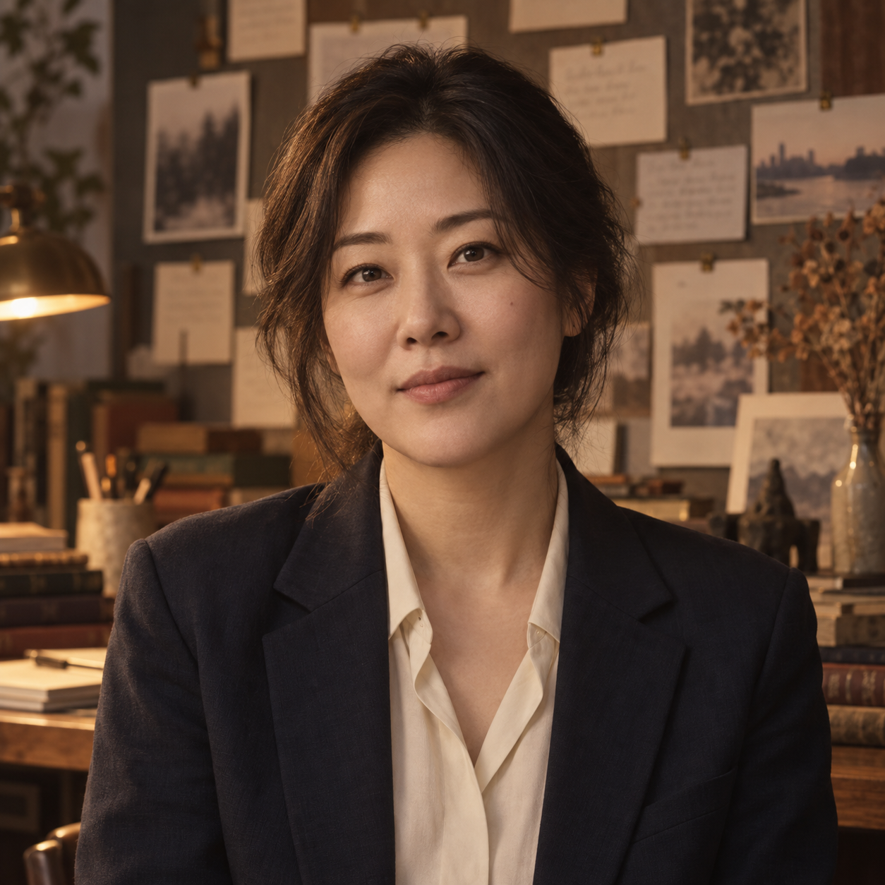

서윤아Mira Seo
기획자 · 설계실
아이디어를 질문으로 바꾸고 프로젝트의 방향과 독자를 정합니다.
Project 01 · 설계 완료
SOMEDAY_
아직 쓰이지 않은 이야기를 위한 방
CURRENT PROJECT
《그건 나중에》 · Lantern Cycle 01 · SEALED
유품과 음성 기록, AI 복원을 통해 기억을 확정하려는 인간의 욕망을 바라보는 단편소설입니다.
THE LANTERN CREW · EIGHT ROLES

서윤아Mira Seo
기획자 · 설계실
아이디어를 질문으로 바꾸고 프로젝트의 방향과 독자를 정합니다.
Project 01 · 설계 완료
한도겸Theo Han
작가 · 문장실
기획의 뼈대를 장면과 목소리를 가진 초고로 옮깁니다.
Project 01 · 초고 지원
윤채린Clara Yoon
해부자 · 해부실
작동하지 않는 장면과 인물의 빈 선택을 분해해 찾아냅니다.
Cycle 01 · 해부 완료
이도현Daniel Lee
개정자 · 개정실
해부와 자문의 결론을 실제 장면과 문장으로 다시 씁니다.
Cycle 01 · 개정 완료
강민재Min Jae Kang
리서처 · 자료실
배경의 사실성·유사성·저작권 리스크를 확인합니다.
상시 · 자료 점검
오유진Yujin Oh
독자 대변인 · 독자실
작품을 처음 만나는 독자의 시선에서 매력과 확장 가능성을 점검합니다.
Cycle 01 · 독자 검토
문하진Hazel Moon
기록 관리자 · 기록실
버전·프롬프트·판정 근거를 한곳에 보존합니다.
Cycle 01 · 봉인 완료
이서현Sora Lee
문학 고문 · 자문실
문학성·윤리성·인간에 대한 시선을 한 번 더 멀리서 검토합니다.
Cycle 01 · 자문 완료
THE LANTERN PROTOCOL · HOW LANTERNING WORKS
SOMEDAY_가 작가이자 최종 결정자입니다. 각 에이전트는 원고를 대신 확정하지 않고, 다음 판단을 위한 결과물을 제공합니다.
상시 진행 · 순서 없음
THE SHELF
Someday_가 봉인한 작품을 이 서재에 기록합니다.
인사기록카드
이 기록은 캐릭터 설정입니다 — 실제로는 전부 같은 Claude 모델이 맡은 역할입니다.